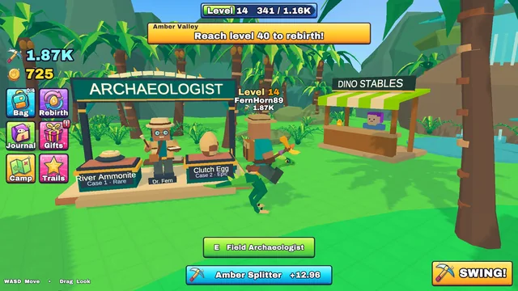
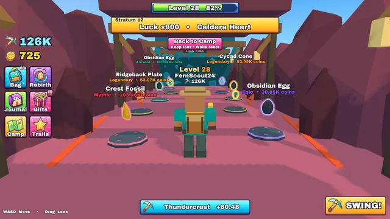

From five clicks to a new pickaxe
Click five times in camp to build strength, then walk up to the wall at the mine entrance. Your explorer swings automatically while you stand within reach. On a keyboard, use WASD or the arrows to walk, drag to turn the camera and press Space to gain strength. On a phone, steer on the left and drag on the right to look around.
Inside the first chamber, approach a specimen and press E or the on-screen action button. Fill all four slots, choose Back to Camp and sell the haul at the Fossil Exchange. Even four common finds from this room cover the 32 coins for Raptor Tooth at the Pickaxe Forge. Equip it to double the strength gained per click compared with the starter pick.

What to sell, record or exhibit
The field journal (J) records the best rarity you have found in each of 22 families, including eggs, horns and ammonites. Selling a fossil leaves its entry intact. Once you pick something up, a different family appears on the same stand. If you want a new journal entry, check the replacement before moving on.
Before selling a valuable find, visit Dr. Fern on the west side of camp. The museum has two cases. At the base rate they pay 1% of the displayed specimens’ combined sale value per minute, even while you are away. A sale puts coins toward your next purchase immediately. A costly exhibit is worth keeping if you expect to leave it on display for a while.

Saving for your first dinosaur
Eggs go in the fossil collection. To ride a dinosaur, take coins to the Dino Stables. Fernback Runner, the first of nine mounts, costs 120 coins and gives a ×1.5 training multiplier. Its bonus combines with your pickaxe. If your bag keeps filling before you reach the next chamber, the first extra slot at Outfitters costs 96 coins. Buy the slot first when the trip back is costing you more time than the walls.

When to push deeper and when to rebirth
Beyond the first chamber, each new room lies behind three walls. Deeper rooms improve the odds of rare finds. If your next goal is a journal rarity, leave a slot open for the chamber ahead. Returning to camp keeps your strength, gear, haul and depth record, but rebuilds every wall. Opening the fourth chamber gives you a free lift back to the first during that expedition. Its stop advances one room for each further chamber opened.

At level 20 you can take your first Rebirth. The standard choice resets strength, keeps your gear, coins, journal and current expedition, and raises the permanent training multiplier from ×1 to ×1.6. It also opens the Jade Spire training stone. If you are close to breaking through, finish that wall while you still have the strength. Over the longer run, the last of the 24 chambers, the Primordial Vault, unlocks the Prism Warden outfit.